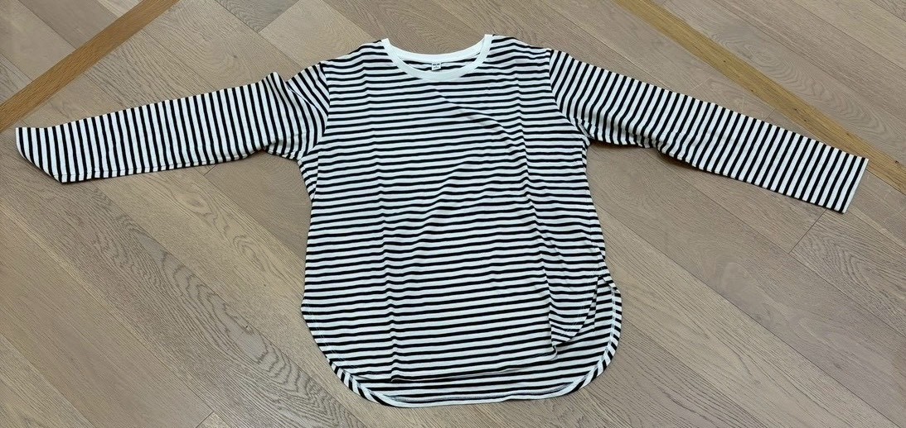

２０２５年１１月１４日
【やったこと】
- 中間発表資料作成
- リメイク服２着作成(ボーダー長袖→オフショル、ズボン→ミニスカ、黒シャツ×ストライプシャツ)
中間発表資料作成
デザイン決定。デザインの色を変更して、ブランドの雰囲気と統一した。Community Loopsの課題と解釈、それに対するグループの具体的取り組みや方針をまとめた。
リメイク服２着作成(ボーダー長袖→オフショル、ズボン→ミニスカ、黒シャツ×ストライプシャツ)
ボーダーの長袖は、肩部分を大幅に切って、端処理した。あとは、ゴムで、きつすぎず、緩すぎずできるように調整。リメイク前
黒の長ズボンは、最初バブルスカートにしようとしていたが、大幅に切って、プリーツを形成し、ミニスカートに変更。
ポケットも無くして、ポケット部分は飾りとして縫い付ける。
 リメイク前
リメイク前黒シャツ×ストライプシャツは、ストライプシャツを必要な形にカットし、まち針で仮止めまでやった。

 リメイク前
リメイク前